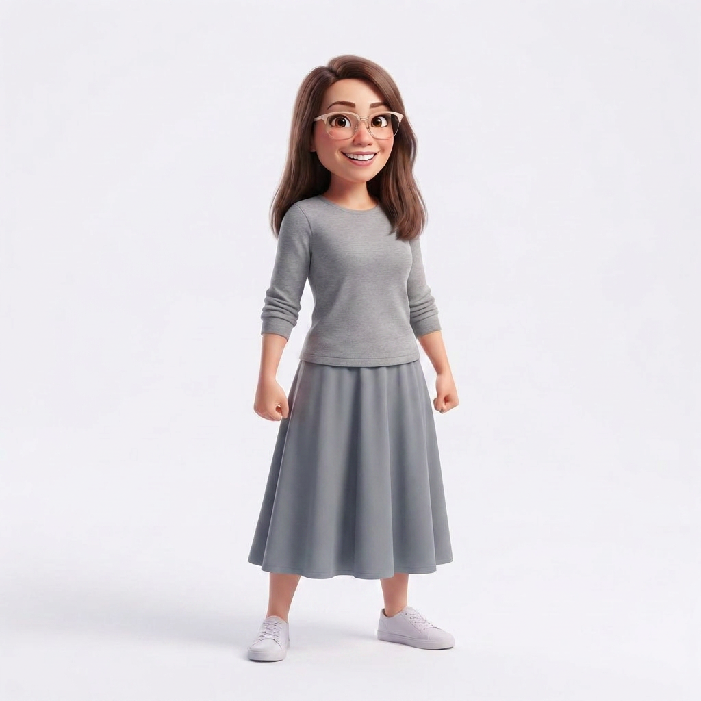
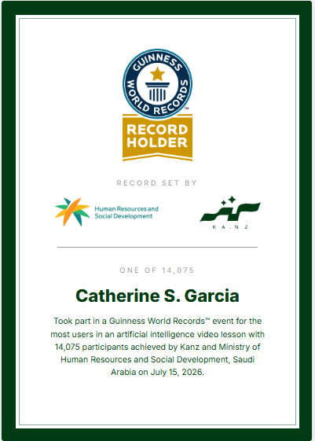
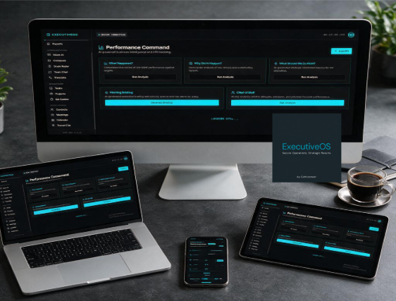
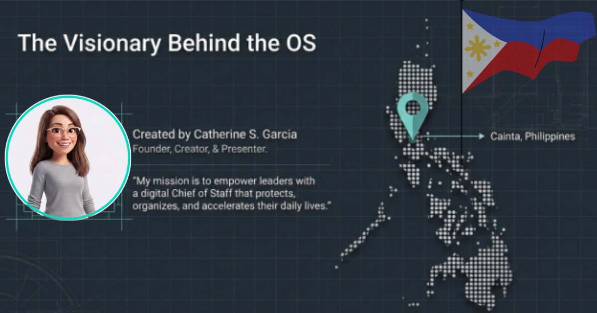

I'm Catherine S. Garcia — 15+ years supporting executives, healthcare teams, and financial services operations, now building AI-powered systems that do the same work faster. Creator of ExecutiveOS, a Gold-rated AI Chief of Staff prototype from the KA.NZ AI Training Hackathon.

Completed an intensive AI training program and independently designed, built, and presented ExecutiveOS — an original AI-powered executive support application — earning a Gold rating for the prototype.
One of 14,075 participants in a Guinness World Records event for the most users in an AI video lesson, hosted by KANZ and Saudi Arabia's Ministry of Human Resources and Social Development, July 15, 2026.

Official Guinness World Records™ certificate — record set with Human Resources and Social Development (Saudi Arabia) and KA.NZ, July 15, 2026.
A working prototype built solo, end to end: concept, design, avatar presenter, and demo — using nothing but consumer AI tools stitched together with intent.

ExecutiveOS is a digital Chief of Staff concept designed to protect, organize, and accelerate a leader's daily operations — handling the scheduling, tracking, reporting, and follow-through that usually falls through the cracks when executives are stretched thin. It's the same skill set Catherine has practiced for 15 years in real operations roles, rebuilt as an AI-assisted product.
Prototyped and shipped using Replit for the application build, Claude and ChatGPT for reasoning and content generation, Magnific for image and creative assets, NotebookLM for presentation research and synthesis, Mini Studio for the presenter avatar, and Google Workspace and Notion to manage documentation end to end.

"My mission is to empower leaders with a digital Chief of Staff that protects, organizes, and accelerates their daily lives." — Catherine S. Garcia, Founder, Creator & Presenter
Non-voice, remote-friendly support drawn from a decade and a half across healthcare, finance, and operations — now paired with AI fluency.
Calendar management, inbox triage, action-item tracking, confidential reporting, and coordination between executives, clients, and teams.
Rapid prototyping of AI-assisted tools and workflows using Replit, Claude, ChatGPT, and no-code platforms to remove repetitive work.
Polished decks, reports, and documentation built with Google Workspace, NotebookLM, and Notion — ready for leadership and clients.
QA reviews, SME coaching, and performance monitoring, with a track record of training and mentoring new team members.
Social media and content moderation, policy enforcement, and reporting aligned to company standards and regulatory compliance.
Appointment scheduling, patient dispatch, records management, and cross-team coordination for healthcare service delivery.
15+ years across financial services, healthcare, and operations — the foundation ExecutiveOS is built on.
Executive support, scheduling, lead generation, social media compliance monitoring, QA reviews, and coaching recommendations for company operations.
Coordinated patient appointments and dispatched healthcare professionals based on medical needs, escalating urgent concerns to clinical staff.
Coordinated campaign implementation with sales and client teams, monitored project timelines, and maintained stakeholder communication.
Coached and trained new team members on banking procedures and service quality, resolved account and fraud disputes, and supported compliance and operational goals across an 8-year tenure.
Assisted clients with policy selection, updates, and claims support.
I'm looking to bring 15+ years of operations, executive support, and AI fluency to a team that values follow-through as much as ideas. Let's talk.